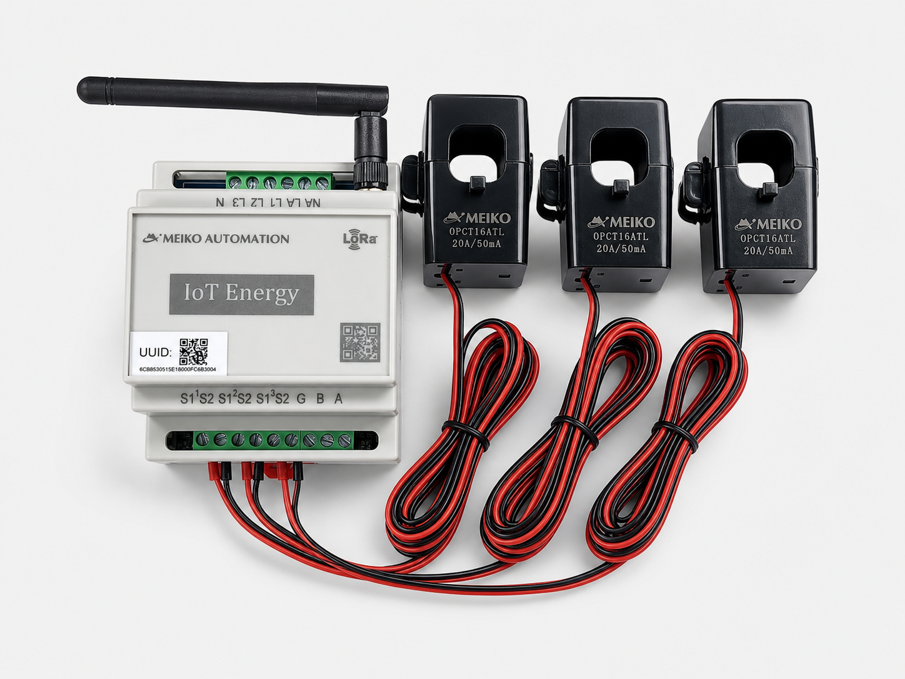

Kỹ thuật Meiko. Kết nối tương lai.
Mở đường cho
nhà máy kết nối.
Mỗi tín hiệu là điểm khởi đầu. Cùng Meiko đi từ thiết bị hiện trường đến một hệ thống vận hành thông suốt.
Theo dấu dòng dữ liệuHành trình dữ liệu • Sơ đồ minh họa
Thiết kế phần cứngFirmware & kết nốiJIG kiểm thửHỗ trợ sản xuất
Hệ sinh thái IoT
Những kết nối nhỏ.
Khả năng vận hành lớn.
Tìm thiết bị phù hợp với từng lớp của hệ thống: đo lường, truyền dữ liệu và cảnh báo.

Hình minh họaĐo lường
MESI-V1
Theo dõi dòng điện thiết bị, hỗ trợ giám sát năng lượng và trạng thái vận hành tại nhà máy.

Cảnh báo
MGAW-V1
Đưa cảnh báo đến người vận hành bằng âm thanh và ánh sáng, kết nối với hệ thống giám sát.
Kết nối
MGWI-V1
Thu nhận bản tin từ các node cảm biến và chuyển dữ liệu về server để giám sát tập trung.
Đo lường
MTSI-V1
Đo nhiệt độ không tiếp xúc, hướng đến theo dõi các vị trí cần giám sát trong môi trường sản xuất.
Kết nối
Modbus reader
Đọc dữ liệu đồng hồ lưu lượng hoặc năng lượng qua Modbus RTU và chuyển về gateway qua LoRa.
Chưa tìm thấy sản phẩm phù hợp. Hãy thử từ khóa khác hoặc chọn tất cả.
Hình minh họa và mô tả ứng dụng đang được hoàn thiện. Trao đổi với đội ngũ kỹ thuật để xác nhận cấu hình phù hợp.
Giải pháp
Bắt đầu từ
bài toán nhà máy.
Thiết bị là một phần của giải pháp. Cùng xác định dữ liệu cần thu thập, cách kết nối và phương án phản hồi.
Hiểu trạng thái máy từ dữ liệu dòng điện.
Thu thập dữ liệu tại thiết bị, tập trung thông tin và hỗ trợ người vận hành theo dõi biến động.
MESI-V1 + MGWI-V1
Trao đổi nhu cầuNăng lực R&D
Một đội ngũ.
Từ ý tưởng đến sản xuất.
Phối hợp phần cứng, firmware và kiểm thử ngay từ đầu để đưa thiết kế đến triển khai thực tế.
- 01
Làm rõ yêu cầu
Môi trường vận hành, dữ liệu cần thiết và phạm vi triển khai.
- 02
Thiết kế & tạo mẫu
Thiết kế mạch, firmware và kết nối theo bài toán thực tế.
- 03
Kiểm thử & hoàn thiện
Đánh giá mẫu, phối hợp JIG ICT/FCT và tối ưu DFM/DFT.
- 04
Hỗ trợ sản xuất
Chuẩn bị tài liệu, hỗ trợ NPI và chuyển giao sản xuất.
Liên hệ
Cùng mở đường
cho dự án tiếp theo.
Chia sẻ nhu cầu, môi trường sử dụng và quy mô dự kiến. Đội ngũ Meiko sẽ cùng bạn làm rõ phương án triển khai.
duc.vuminh@meiko.vnTầng 1, Nhà EMS2, Lô CN9, KCN Thạch Thất – Quốc Oai, Hà Nộimeiko-auto.vn ↗